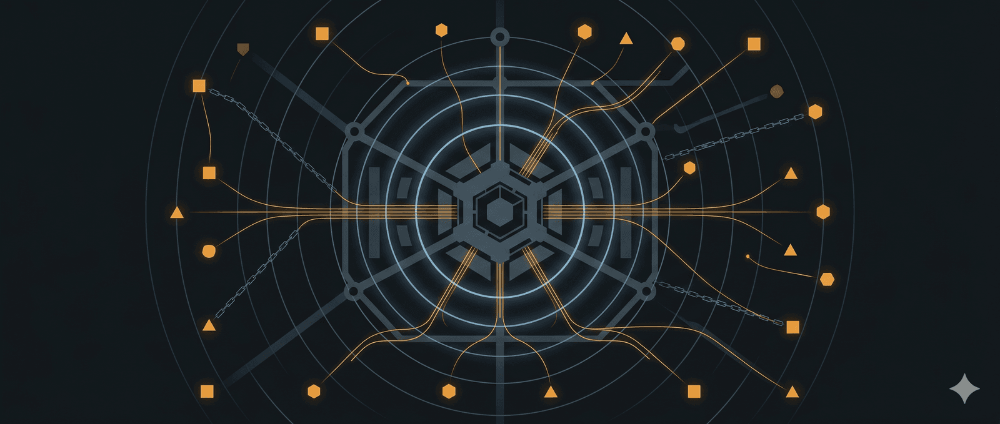

Tác giả: Infoblox Threat Intel và Chong Lua Dao
Các vụ lừa đảo sử dụng phần mềm độc hại và các vụ lừa đảo truy cập từ xa đang gia tăng trong bối cảnh các hoạt động lừa đảo quy mô công nghiệp lan rộng ở Đông Nam Á, với nhiều quốc gia trong khu vực đã đưa ra cảnh báo chính thức trong ba năm qua. Tuy nhiên, việc liên kết phần mềm độc hại cụ thể với các khu phức hợp khét tiếng này vẫn còn khó khăn… cho đến nay. Hợp tác với tổ chức phi lợi nhuận Trùng Luân Đạo của Việt Nam, chúng tôi đã phát hiện ra một phần mềm độc hại ngân hàng Android có khả năng hoạt động từ nhiều địa điểm, bao gồm cả khu phức hợp K99 Triumph City ở Campuchia. Kết luận này dựa trên phân tích kỹ thuật, lời khai của một người trốn thoát và bằng chứng thu thập được từ cơ sở này bởi nạn nhân buôn người. Khu phức hợp này đã được Liên Hợp Quốc và các tổ chức khác báo cáo rộng rãi là một trung tâm lừa đảo có liên hệ với giới tinh hoa chính trị cấp cao và sử dụng lao động cưỡng bức để thực hiện các chiến dịch tin nhắn, thoại và email độc hại quy mô lớn.
Sự gia tăng đột biến bất ngờ trong các truy vấn DNS từ môi trường khách hàng đám mây của chúng tôi đã dẫn chúng tôi đến với phần mềm độc hại, nơi cuối cùng chúng tôi đã xác định được một nền tảng phần mềm độc hại dưới dạng dịch vụ (MaaS) tinh vi có khả năng hỗ trợ giám sát thời gian thực, đánh cắp thông tin đăng nhập, đánh cắp dữ liệu—bao gồm cả dữ liệu sinh trắc học—và gian lận tài chính. Chúng tôi đã phát hiện ra hàng trăm tên miền được sử dụng để nhắm mục tiêu vào các nạn nhân, nhiều trong số đó được thiết kế để trông giống như các tổ chức chính phủ. Chúng tôi lần đầu tiên thấy các bất thường về DNS cách đây một năm, nhưng chúng tôi có thể xác định niên đại của trojan này ít nhất là từ năm 2023.
Chúng tôi ghi nhận khoảng 35 tên miền mới được đăng ký mỗi tháng. Trong số khách hàng của Infoblox Threat Defense Cloud, những người bị ảnh hưởng nhiều nhất đến từ các quốc gia Đông Nam Á, châu Âu và Mỹ Latinh, với số lượng yêu cầu cao nhất liên quan đến khách hàng ở Indonesia, Thái Lan, Tây Ban Nha và Thổ Nhĩ Kỳ, cho thấy phạm vi hoạt động toàn cầu và tác động tiềm tàng của tin tặc.
Điều tra sâu hơn đã phát hiện ra sự trùng lặp về cơ sở hạ tầng và hành vi giữa dịch vụ MaaS này và hoạt động trước đây được cho là của các tác nhân đe dọa được theo dõi với tên gọi Vigorish Viper và Vault Viper. Những liên kết này cho thấy một vụ lừa đảo đa ngôn ngữ quy mô lớn nhắm vào các nạn nhân ở ít nhất 21 quốc gia trên bốn châu lục, như thể hiện trong Hình 1. Dựa trên các dấu vết ngôn ngữ, mô hình cơ sở hạ tầng và đặc điểm hoạt động, chúng tôi đánh giá rằng phần mềm độc hại này có khả năng thuộc về một quản trị viên MaaS nói tiếng Trung Quốc không rõ danh tính, người đang điều hành nhiều trung tâm lừa đảo ở khu vực sông Mekong, nơi có báo cáo về lao động cưỡng bức, và được sử dụng để phát tán phần mềm độc hại và thực hiện các vụ lừa đảo.
Hình 1. Các quốc gia nơi phát hiện các chiến dịch giả mạo dịch vụ chính phủ và các tổ chức khác; phạm vi nhắm mục tiêu thực tế có thể rộng hơn nhiều.
Chong Lua Dao đã giúp giải thoát một số tù nhân bị ép buộc thực hiện các vụ lừa đảo từ bên trong khu phức hợp K99 Triumph City và giúp tìm ra mối liên hệ với loại mã độc Trojan cụ thể này. Các chi tiết quan trọng về hoạt động bên trong của các vụ lừa đảo do những người trốn thoát cung cấp, cùng với phân tích phần mềm độc hại từ Chong Lua Dao, đã mở đường cho chúng tôi tìm hiểu sâu hơn và có được cái nhìn trực quan theo thời gian thực về hoạt động này. Chúng tôi đã có thể quan sát mức độ xâm nhập cao của mã độc Trojan này, trao cho kẻ tấn công toàn quyền kiểm soát các thiết bị bị nhiễm và cho phép chúng theo dõi nạn nhân và đánh cắp dữ liệu trực tiếp. Chúng tôi cũng tìm thấy bằng chứng về các bảng điều khiển C2 được phân đoạn và dán nhãn theo quốc gia mục tiêu (ví dụ: “Nhóm Indonesia”, “Nhóm Brazil”, “Nhóm Ai Cập”) và trong một số trường hợp là theo tên khách hàng riêng biệt – cho thấy sự phân chia hoạt động có cấu trúc và quản lý phối hợp.
Báo cáo này bao gồm các chi tiết về chiến dịch, được thu thập trực tiếp từ những người bị giam giữ tại khu phức hợp K99 và bị ép buộc tham gia vào tội phạm mạng. Ngoài lời khai của họ, những người trốn thoát còn cung cấp ảnh chụp màn hình chứng minh trực tiếp mối liên hệ giữa các tên miền mà chúng tôi đang theo dõi với các hoạt động liên quan đến khu phức hợp này.
Kết quả nghiên cứu của chúng tôi dựa trên sự kết hợp giữa phân tích kỹ thuật, mô hình cơ sở hạ tầng và bằng chứng xác thực từ lời khai của nguồn tin cũng như dữ liệu thu thập được. Mặc dù các chỉ số kỹ thuật hỗ trợ việc xác định nền tảng phần mềm độc hại và phạm vi sử dụng rộng rãi của nó, nhưng mối liên hệ với các địa điểm cụ thể, bao gồm K99 Triumph City, dựa trên bằng chứng tổng hợp này và phản ánh đánh giá phân tích của chúng tôi.
Nguồn gốc và mô hình DNS
Vào tháng 3 năm 2025, chúng tôi nhận thấy sự gia tăng đột ngột về số lượng yêu cầu của khách hàng (Hình 2) cùng với sự tăng mạnh về số lượng đăng ký tên miền. Dữ liệu của chúng tôi cho thấy hầu hết các khách hàng bị ảnh hưởng đến từ các quốc gia Đông Nam Á, châu Âu và Mỹ Latinh, với số lượng yêu cầu cao nhất đến từ khách hàng ở Indonesia, Thái Lan, Tây Ban Nha và Thổ Nhĩ Kỳ. Những bất thường này đã dẫn chúng tôi đến việc điều tra và cuối cùng phát hiện ra một loại mã độc Trojan ngân hàng dành cho Android.
Hình 2. Khối lượng truy vấn DNS liên quan đến phần mềm độc hại trong mạng lưới khách hàng của Infoblox Threat Defense Cloud, tháng 1-12 năm 2025.
Chiến dịch này vẫn đang hoạt động, đăng ký khoảng 35 tên miền mới mỗi tháng—bao gồm cả tên miền được tạo bằng thuật toán tạo tên miền đã đăng ký (RDGA) và tên miền giả mạo—nhằm mạo danh các tổ chức hợp pháp và dịch vụ chính phủ để phát tán phần mềm độc hại. Các tên miền này được thiết kế để giả mạo ngân hàng, quỹ hưu trí, tổ chức an sinh xã hội, nhà cung cấp dịch vụ tiện ích và nhiều cơ quan thu thuế, nhập cư, viễn thông và thực thi pháp luật. Xem Bảng 1 để biết một số ví dụ.
| Lãnh địa | Mục tiêu (Quốc gia hoặc Tổ chức) |
|---|---|
| vsgo[.]cc | Hệ thống An sinh Xã hội Philippines |
| nmxgo[.]cc | Sở Cảnh sát Nam Phi |
| orgo[.]cc | Quỹ hưu trí nhà nước Indonesia |
| idphil[.]net | Bộ Thông tin và Truyền thông Philippines |
| immigration-kr[.]net | Cục Di trú Hàn Quốc |
| openbank-es[.]com | Openbank Tây Ban Nha |
| googleplay[.]djppajakgoid[.]com | Tổng cục Thuế Indonesia |
| cedula-registraduria-gov[.]org | Cơ quan đăng ký hộ tịch quốc gia Colombia |
| Bảng 1. Các mẫu miền RDGA và miền tương tự. | |
Hình 3 bên dưới cho thấy một số ví dụ về các chiêu trò lừa đảo được sử dụng . Gần đây, phạm vi của vụ lừa đảo đã mở rộng cả về mặt địa lý và bối cảnh, bao gồm cả các chiêu trò nhắm vào các hãng hàng không và nền tảng thương mại điện tử, cũng như các quốc gia ở châu Phi và Mỹ Latinh.
Hình 3. Ảnh chụp màn hình các trang mồi nhử được nhắm mục tiêu để phát tán phần mềm độc hại, mạo danh các thực thể bao gồm Cục Thuế Liên bang Brazil, Ryanair, Openbank và Sở Cảnh sát Nam Phi.
Chúng tôi đã phân tích 400 tên miền mồi nhử được đăng ký vào năm 2025 và được sử dụng để lừa đảo và lây nhiễm cho nạn nhân. Báo cáo này trình bày bằng chứng cho thấy các tên miền này là một phần của hoạt động phối hợp, được quản lý tập trung, được thiết kế để có quy mô và khả năng phục hồi cao.
Việc đăng ký tên miền cho các chiêu trò lừa đảo chủ yếu được thực hiện với các nhà đăng ký có trụ sở tại Hồng Kông như Dominet (64%), Domain International Services (10%) và Namemart—trước đây là Domain International Services—(7%), chiếm 81% cơ sở hạ tầng được xác định (Hình 4). Kẻ tấn công đặc biệt ưa chuộng các tên miền cấp cao nhất (TLD).com,.top và.cc, chiếm khoảng 86% tổng số tên miền. Hầu hết các tên miền đều được ẩn sau Cloudflare.
Hình 4. Phân bố các nhà đăng ký tên miền mồi nhử có mục tiêu.
Có vẻ như việc tạo ra các tên miền này tuân theo một chiến lược: tiền tố gồm 2-5 ký tự, theo sau là hậu tố được lựa chọn cẩn thận (thường là ‘go’ hoặc ‘gov’). Điều này có thể nhằm mục đích giống với các tên miền cấp cao nhất.go và.gov, hỗ trợ cho các nỗ lực lừa đảo qua mạng và mạo danh chính phủ của kẻ tấn công. Trong một số trường hợp, tên miền bao gồm việc nhắm mục tiêu vào các khu vực địa lý cụ thể, được thể hiện bằng các hậu tố ngắn như ‘ph’, ‘th’ và ‘vn’, cũng như các hậu tố dài hơn như ‘ind’, ‘mxco’, ‘peru’ và ‘africa’.
Các tên miền được sử dụng cho C2 và các bảng quản lý khác được đặt tên hơi khác một chút, và sử dụng các đuôi tên miền.top,.xyz,.vip và.pro, mặc dù có sự ưu tiên rõ ràng cho.top (39 trong số 42 tên miền C2 đang hoạt động). Tất cả các tên miền C2 đều sử dụng các nhà đăng ký Domain International Services và Namemart cùng với máy chủ tên miền DomainNameDNS.
Chuỗi tấn công
Cuộc tấn công bao gồm nhiều giai đoạn và sử dụng một bộ công cụ có thể tùy chỉnh, được cấu hình để tạo ra nhiều biến thể của phần mềm độc hại (Hình 5). Thông qua nhiều cơ chế khác nhau, người dùng bị dẫn đến một trang web giả mạo các dịch vụ hợp pháp, thường liên quan đến ngân hàng hoặc chính phủ.
Hình 5. Chuỗi tấn công đơn giản của mã độc Trojan ngân hàng APK
Các trang web lừa đảo này yêu cầu người dùng tải xuống một ứng dụng di động, ứng dụng này sử dụng JavaScript được mã hóa base64 để phát tán một tệp APK độc hại dung lượng 23MB. Khi người dùng nhấp vào nút tải xuống, tập lệnh sẽ tải xuống tệp theo từng đoạn nhỏ trong khi hiển thị thanh tiến trình giả mạo, cuối cùng dẫn đến việc cài đặt phần mềm độc hại.
Khi tệp APK được thực thi, ứng dụng sẽ hiển thị màn hình đăng nhập giả mạo, giống như hình 6. Màn hình đăng nhập thực tế sẽ khác nhau tùy thuộc vào kiểu tấn công.
Hình 6. Ảnh chụp màn hình các giao diện đăng nhập mẫu sau khi cài đặt, và giả mạo Cơ quan Điện lực tỉnh Thái Lan, Cơ quan Thuế Liên bang Brazil và Hãng hàng không LATAM.
Sau khi được cài đặt, phần mềm độc hại sẽ mang cấu trúc của một trojan ngân hàng đa năng với nhiều khả năng giám sát xâm nhập. Như thể hiện trong Hình 7, chức năng cốt lõi của phần mềm độc hại bao gồm giám sát từ xa theo thời gian thực, chặn tin nhắn SMS và cuộc gọi điện thoại, truy cập camera và micro, thu thập thông tin đăng nhập và khả năng cài đặt phần mềm bổ sung . Nó cũng chứa một mô-đun nhận dạng thiết bị toàn diện, thu thập một cách có hệ thống thông tin chi tiết về phần cứng và hệ thống, sau đó được tổng hợp và chuyển đến máy chủ C2 của kẻ tấn công.
Hình 7. Chức năng cốt lõi của phần mềm độc hại. Nguồn: Chong Lua Dao
Intel Inside
Như thể hiện trong Hình 8 và 9, khi xem xét mã nguồn, chúng ta thấy rằng một số mẫu ban đầu bao gồm địa chỉ IP, cổng, API đăng nhập, khóa mã hóa và các dữ liệu khác được mã hóa cứng; trong khi các mẫu sau này sử dụng một hàm giải mã nội bộ để tự động truy xuất địa chỉ IP trong thời gian chạy, loại bỏ mọi thành phần tĩnh khỏi mã nguồn. Sự thay đổi này, cùng với dấu thời gian BuildConfig được cập nhật, cho thấy phần mềm độc hại vẫn đang được phát triển tích cực.
Hình 8. Cấu hình bản dựng hiển thị địa chỉ IP C2 được mã hóa cứng và các dữ liệu khác. Nguồn: Chong Lua Dao
Hình 9. Mẫu thay thế không còn hiển thị địa chỉ IP C2 được mã hóa cứng. Nguồn: Chong Lua Dao
Với mức độ bảo mật vận hành (OPSEC) yếu hơn được thấy trong các mẫu cũ hơn, có vẻ hợp lý khi cho rằng sẽ có những sai sót khác xảy ra, và Chong Lua Dao đã nhanh chóng tìm thấy một máy chủ C2 bị lộ thông tin mà thiếu các biện pháp kiểm soát truy cập phù hợp. Điều này cho phép chúng tôi giám sát hoạt động của nhiều người điều hành và trực tiếp quan sát sự lây nhiễm và hành vi của kẻ tấn công trong thời gian thực.
Chúng tôi quan sát thấy các đối tượng điều hành, thông qua việc truy cập vào cơ sở hạ tầng bị lộ, triển khai các hộp thoại cấp quyền tùy chỉnh và màn hình phủ để đánh lừa nạn nhân trong khi đánh cắp dữ liệu bao gồm danh bạ, ghi chú, ảnh, tin nhắn SMS và nhật ký cuộc gọi, những dữ liệu này có thể được sử dụng ngay lập tức để hỗ trợ các cuộc tấn công tiếp theo. Chúng tôi cũng quan sát thấy các đối tượng điều hành sử dụng bảng điều khiển quản trị dựa trên web để quản lý nhiều thiết bị bị nhiễm cùng lúc trong khi sử dụng các quy trình làm việc khác nhau tùy thuộc vào từng nạn nhân.
Như thể hiện trong Hình 10 bên dưới , trong quá trình hoạt động, nạn nhân sẽ thấy một lớp phủ xác minh kỹ thuật số giả mạo hoặc xác minh danh tính khách hàng (KYC) trong khi kẻ tấn công đồng thời kích hoạt việc thu thập dữ liệu sinh trắc học ở chế độ nền. Dữ liệu nhận dạng khuôn mặt sau đó được sử dụng để xác thực vào ứng dụng ngân hàng trực tuyến của nạn nhân mà họ không hề hay biết. Bằng cách chặn mã OTP SMS của ngân hàng, kẻ tấn công có toàn quyền truy cập vào tài khoản ngân hàng của nạn nhân và có thể chuyển tiền đến bất cứ nơi nào chúng muốn.
Hình 10. Ảnh chụp màn hình của 1) một kẻ điều hành hướng dẫn nạn nhân người Philippines cài đặt tệp APK độc hại tại sss.oiago[.]cc bằng Facebook Messenger, 2) kẻ điều hành sau đó triển khai lớp phủ xác minh KYC, 3) và 4) kẻ điều hành rút tiền của nạn nhân từ BBVA Mexico. Nguồn: Chong Lua Dao
Quản trị viên MaaS sử dụng các tên miền phụ duy nhất, bao gồm ‘kef’, ‘ador’ và ‘rpc’, cũng như ’ adm’ và ‘apim’ cho máy chủ C2 và các bảng quản lý ứng dụng Android khác nhau. Những tên miền phụ này và các tên miền phụ khác cho phép sử dụng chữ ký đó cùng với dữ liệu DNS để xác định thêm các máy chủ C2 bị nghi ngờ được thiết lập để hỗ trợ nhiều khách hàng (các nhà điều hành tội phạm) cùng một lúc. Điều này bao gồm một loạt các bảng điều khiển C2 được phân đoạn được gắn nhãn theo quốc gia mục tiêu (ví dụ: “Nhóm Indonesia”, “Nhóm Brazil”, “Nhóm Ai Cập”) và trong một số trường hợp theo những gì dường như là tên khách hàng riêng biệt — cho thấy các phân chia hoạt động có cấu trúc và quản lý phối hợp. Phân tích sâu hơn cho thấy các bảng điều khiển dường như dành riêng cho việc phát triển ứng dụng ngân hàng đã được sửa đổi và kỹ thuật đảo ngược, nhận dạng khuôn mặt và thử nghiệm né tránh phần mềm độc hại, cũng như tích hợp chatbot AI và giọng nói deepfake. Chúng được hiển thị bên dưới trong Hình 11 và 12 .
Hình 11. Ảnh chụp màn hình các mẫu bảng quản trị dành riêng cho hoạt động tại Thái Lan và Châu Phi cũng như quá trình phát triển ứng dụng ngân hàng trực tuyến đã được sửa đổi. Nguồn: Chong Lua Dao
Hình 12. Ảnh chụp màn hình các bảng điều khiển quản lý công cụ nhận diện khuôn mặt và trí tuệ nhân tạo được xác định bởi Infoblox Threat Intel và Chong Lua Dao.
Chúng tôi đã có thể xem xét kỹ cấu trúc bên trong của nền tảng quản lý APK tùy chỉnh của quản trị viên MaaS được hiển thị ở trên, trớ trêu thay lại nằm trên safeapk[.]xyz, và phát hiện ra một loạt các ứng dụng tùy chỉnh mạo danh các tổ chức ở Thái Lan. Như thể hiện trong Hình 13, điều này bao gồm các ứng dụng dường như đang mạo danh Thai Airways, Ngân hàng Kasikorn, LX International, Văn phòng Ủy ban Bảo hiểm và Cơ quan Du lịch Thái Lan, phù hợp với các chiến dịch trước đó có thể thấy trong các bản ghi DNS lịch sử.
Hình 13. Ảnh chụp màn hình bảng quản lý APK. Nguồn: Chong Lua Dao
Phân tích cơ sở hạ tầng và tên miền liên quan cho thấy cùng một cơ sở hạ tầng đã được sử dụng trong các hoạt động khác, bao gồm lừa đảo trực tuyến (phishing), đầu tư tiền điện tử hoặc lừa đảo giết mổ lợn. Chúng đã sử dụng các tên miền như lx-yindu[.]top và orbiixtrade[.]com để mạo danh Tòa án Tối cao Ấn Độ và nền tảng giao dịch tiền điện tử Orbix của Thái Lan, như thể hiện trong Hình 14, trong đó trường hợp đầu tiên đáng chú ý đã được báo cáo trong một thông báo chính thức do Chính phủ Ấn Độ ban hành.
Hình 14. Ảnh chụp màn hình các trang web mẫu về lừa đảo trực tuyến và giết mổ lợn.
Bảo mật thông tin hoạt động rất khó (đặc biệt khi sử dụng lao động cưỡng bức): Một nghiên cứu trường hợp
Vào cuối năm 2025, những người bị bắt giữ đã liên lạc với Chong Lua Dao để tìm cách được giải cứu khỏi khu phức hợp ở Sihanoukville, Campuchia, một trung tâm tội phạm mạng có liên hệ với Vigorish Viper. Những người này cho biết họ đã bị đánh đập và bị điện giật vì không đạt được mục tiêu hiệu suất – những cáo buộc này phù hợp với báo cáo từ Liên Hợp Quốc và các tổ chức khác đã ghi nhận những sự việc tương tự từ địa điểm này trong những năm gần đây.
Các cá nhân đã được giải cứu thành công khỏi khu phức hợp K99, và bằng chứng mà họ chia sẻ (nhật ký trò chuyện nhóm kín, ảnh chụp màn hình và dữ liệu khác) đã xác thực thêm các phát hiện của chúng tôi và khẳng định rằng có một hoạt động phân phối phần mềm độc hại dựa trên dịch vụ và hoạt động lừa đảo đang diễn ra trên cơ sở hạ tầng liên quan. Bằng chứng của họ cũng cho thấy một số tên miền (Hình 15) từ cụm ban đầu của chúng tôi đã được sử dụng trong vụ lừa đảo, cung cấp bằng chứng mạnh mẽ cho đánh giá của chúng tôi rằng các phát hiện của chúng tôi có liên quan đến trang web K99 (Hình 16).
Hình 15. Ảnh chụp màn hình các tên miền được sử dụng để mạo danh Bộ Công an và Bộ Tài chính, Tổng cục Thuế, được phân phát cho các đối tượng điều hành trong các nhóm trò chuyện riêng tư của một mạng lưới lừa đảo có trụ sở tại K99 Triumph City, Sihanoukville, Campuchia. Nguồn: Chong Lua Dao
Hình 16. Tin nhắn từ một công nhân bị bắt giữ gửi cho Chong Lua Dao yêu cầu được giải cứu từ một địa điểm được xác định là K99 Triumph City ở Sihanoukville, Campuchia.
Như thể hiện trong Hình 17 bên dưới, việc kiểm tra máy trạm của một người nội bộ cho thấy dữ liệu cá nhân và doanh nghiệp chi tiết được sử dụng để nhắm mục tiêu vào nạn nhân, cũng như các kịch bản được thiết kế riêng và các tài liệu chính phủ giả mạo được sử dụng trong kỹ thuật xã hội. Nó cũng bao gồm một thông báo giả mạo của chính phủ được gửi đến các chủ doanh nghiệp hoặc nhân viên bị nhắm mục tiêu liên quan đến việc thực hiện chương trình nhận dạng kỹ thuật số mới và giảm thuế giá trị gia tăng (VAT) cho các doanh nghiệp Việt Nam đã đăng ký. Các chiến dịch liên quan cũng giả mạo hàng chục dịch vụ chính phủ khác, từ các nhà cung cấp tiện ích đến cơ quan thực thi pháp luật.
Hình 17. Ảnh chụp màn hình máy trạm của một nhân viên nội bộ tại K99 Triumph City. Nguồn: Chong Lua Dao
Theo lời người trốn thoát, những người làm việc trong khu phức hợp ban đầu liên lạc với nạn nhân qua điện thoại bằng eyeBeam, một phần mềm thoại qua giao thức Internet (VoIP) để giả mạo các quan chức chính phủ. Sau đó, họ chuyển sang ứng dụng nhắn tin phổ biến Zalo và gửi một liên kết hoặc mã QR hướng nạn nhân đến trang mồi nhử đã được mô tả trước đó. Tiếp theo, họ hướng dẫn nạn nhân cài đặt tệp APK độc hại và cấp quyền truy cập mở rộng trên thiết bị của họ, bất chấp mọi cảnh báo của hệ thống.
Tiếp theo, kẻ điều hành theo dõi sát sao thiết bị bị nhiễm trước khi sử dụng thông tin đăng nhập thu thập được để truy cập vào ứng dụng ngân hàng của nạn nhân. Chúng tiến hành chặn mã xác thực một lần qua tin nhắn SMS để xác minh danh tính trước khi thao túng nạn nhân thực hiện quy trình xác minh sinh trắc học (nhận diện khuôn mặt) thông qua một màn hình giả lập trông rất thuyết phục. Đến lúc này, nạn nhân hoàn toàn tin rằng những hành động này là cần thiết để tuân thủ “chương trình mới của chính phủ”.
Thực tế đáng buồn là nạn nhân vừa hoàn thành bước cuối cùng, cho phép kẻ lừa đảo truy cập hoàn toàn vào tài khoản ngân hàng trực tuyến của họ. Chuỗi sự kiện này được minh họa bên dưới trong Hình 18 bằng các hình ảnh được chụp trong một vụ tấn công thực tế.
Hình 18. Ảnh chụp màn hình của kẻ lừa đảo triển khai màn hình xác minh KYC, sử dụng quét khuôn mặt của nạn nhân để truy cập vào tài khoản ngân hàng trực tuyến mục tiêu trong nền. Nguồn: Chong Lua Dao và Infoblox Threat Intel
Nhóm K99 và các liên kết đến Vigorish Viper và Vault Viper
Theo hồ sơ đăng ký doanh nghiệp chính thức mà chúng tôi thu được, K99 Triumph City thuộc sở hữu của Tập đoàn K99 của Campuchia, một tập đoàn đa ngành bao gồm các công ty kinh doanh sòng bạc và cờ bạc trực tuyến, phát triển bất động sản và đầu tư. Tập đoàn này do ông trùm Rithy Raksmei (còn gọi là Xie Liguang) làm chủ tịch, một thành viên trong gia đình của một trong những người giàu nhất Campuchia, Thượng nghị sĩ Kok An, người được cho là đang bị chính quyền Thái Lan truy nã vì liên quan đến tội gian lận mạng và rửa tiền.
Cả hai người đàn ông này gần đây đều được nêu tên trong nghị quyết của Hạ viện Quốc hội Hoa Kỳ (HR 5490) với tư cách là cá nhân nước ngoài bị cáo buộc tham gia vào các tổ chức tội phạm xuyên quốc gia thực hiện các hoạt động lừa đảo trực tuyến quy mô lớn và được mô tả trong các báo cáo là tạo điều kiện tiếp cận thị trường địa phương thông qua các quan hệ đối tác kinh doanh chính thức với các mạng lưới tội phạm hoạt động ở Đông Nam Á. Điều này bao gồm các tổ chức do trùm xã hội đen bị kết án, Alvin Chau của Tập đoàn Suncity, và Dong Lecheng, người bị Anh và Mỹ trừng phạt, cầm đầu, cùng với những người khác tham gia vào một trong những cụm trung tâm lừa đảo khét tiếng nhất ở Sihanoukville, Campuchia, thường được gọi là ‘Khu phố Tàu’, như thể hiện trong Hình 19.
Hình 19. Các địa điểm trung tâm lừa đảo chính liên quan đến mạng lưới K99 mở rộng, Sihanoukville, Campuchia. Nguồn: Cyber Scam Monitor, tháng 3 năm 2025
Như đã nêu bật trong các bài báo trước đây của chúng tôi, khu phố Tàu là một khu vực khép kín bao gồm nhiều sòng bạc được bảo vệ nghiêm ngặt và các khu phức hợp lừa đảo. Nơi đây nhanh chóng nổi lên như một trong những trung tâm lừa đảo trực tuyến lớn nhất thế giới kể từ khi bắt đầu phát triển vào khoảng năm 2017, với các dự án này liên kết chặt chẽ với các mạng lưới tội phạm nói tiếng Hoa có liên quan đến Kok An và Rithy Raksmei.
Sự tập trung của các đối tượng liên quan đến khu vực này cho thấy một hệ sinh thái tập trung cao độ, nơi một nhóm nhỏ những người có quan hệ chính trị đóng vai trò là những người tạo điều kiện then chốt, cho phép các nhóm tội phạm xuyên quốc gia tiếp cận, bảo vệ và duy trì hoạt động. Các cá nhân có liên hệ với những khu phức hợp này đã được ghi nhận trong các báo cáo là có liên hệ với các băng đảng tội phạm khu vực thông qua các thỏa thuận hợp tác công khai, cấu trúc doanh nghiệp chồng chéo và cơ sở hạ tầng dùng chung.
Các báo cáo gần đây từ các nhóm bảo vệ quyền lợi và các nguồn khác cho thấy K99 Triumph City vẫn hoạt động bất chấp chiến dịch trấn áp tội phạm mạng và lừa đảo đang diễn ra của chính phủ Campuchia - phù hợp với các mô hình được quan sát thấy trong các mạng lưới trung tâm lừa đảo quy mô lớn.
Bên cạnh những mối liên hệ được cho là của K99 với Thượng nghị sĩ Kok An, mạng lưới này từ lâu đã được mô tả là có quan hệ mật thiết với giới tinh hoa chính trị và quân sự Campuchia, như thể hiện trong Hình 20, 21 và 22. Đáng chú ý nhất, điều này bao gồm việc K99 cùng đặt trụ sở với công ty đầu tư và sòng bạc Royal Union, và cựu Giám đốc của công ty, Yim Leak, con trai của Phó Thủ tướng Yim Chhay Ly, người có tên trong Đạo luật Giải tán các Tổ chức Lừa đảo Nước ngoài do Quốc hội Hoa Kỳ đề xuất. Chúng tôi cũng thấy thú vị khi các hồ sơ lịch sử về sự tham gia của Leak vào công ty đã bị xóa khỏi sổ đăng ký kinh doanh chính thức của Campuchia trong những tháng gần đây. May mắn thay, chúng tôi đã giữ lại bản sao.
Hình 20. Ông trùm kinh doanh Rithy Raksmei tham dự lễ khởi công dự án K99 Triumph City cùng Thượng nghị sĩ Campuchia Kok An vào tháng 1 năm 2019. Nguồn: Thời báo Campuchia-Trung Quốc
Hình 21. Ảnh chụp màn hình biển hiệu Royal Union Casino tại khu phức hợp K99 Triumph City ở Sihanoukville, Campuchia, tháng 12 năm 2023 (trái). Ảnh chụp màn hình Rithy Raksmei cùng Yim Leak tại đám cưới của ông ở Bangkok, tháng 11 năm 2018 (phải), và hồ sơ đăng ký kinh doanh Campuchia cho thấy vai trò được liệt kê của Yim Leak trong Royal Union Investment (dưới cùng). Nguồn: Simon Menet, Facebook, và Bộ Thương mại Campuchia, Cơ quan đăng ký kinh doanh, tháng 3 năm 2026.
Hình 22. Ảnh chụp màn hình khoản quyên góp của Tập đoàn K99 cho quân đội Campuchia, tháng 8 năm 2020 (bên trái) và một trong số các cuộc gặp được ghi nhận giữa Rithy Raksmei và Thủ tướng đương nhiệm của Campuchia, Hun Manet, tháng 12 năm 2021 (bên phải). Nguồn: Facebook
Vào tháng 2 năm 2026, Văn phòng Chống rửa tiền (AMLO) và Tòa án Dân sự Thái Lan đã ban hành lệnh tạm giữ tài sản trị giá 13,07 tỷ THB (407 triệu USD) mà các nhà chức trách cho là có liên quan đến Yim Leak, Kok An và những người khác trong các cuộc điều tra về hoạt động lừa đảo xuyên quốc gia thông qua mạng.
Vẫn còn sung sức
Hệ thống hạ tầng độc hại vẫn đang hoạt động và có khả năng phục hồi cao, với hàng trăm tên miền hỗ trợ nhiều chiến dịch đồng thời trên ba châu lục tại thời điểm viết bài này. Hoạt động liên quan đến hệ thống hạ tầng này tiếp tục thích ứng và mở rộng, duy trì các chiến dịch quy mô lớn nhắm vào các quốc gia như Thái Lan, Indonesia, Philippines và Việt Nam, đồng thời ngày càng đa dạng hóa sang châu Phi và Mỹ Latinh.
Việc giám sát liên tục cho thấy hoạt động xoay vòng tên miền diễn ra liên tục bằng cách sử dụng RDGA và đăng ký tên miền giả mạo mới, cho thấy nhu cầu bền vững từ các mạng lưới tội phạm trong khu vực. Chúng tôi cũng đã quan sát thấy sự tích hợp liên tục của các chiêu trò lừa đảo mới cùng với việc tái sử dụng các tên miền cũ để hỗ trợ các chiến dịch mới. Các ví dụ gần đây trong Hình 23 minh họa sự thay đổi từ chiêu trò lừa đảo mạo danh chính phủ Philippines sang chiêu trò nhắm mục tiêu vào khách hàng của một ngân hàng Maroc, cũng như một tên miền được sử dụng cho các vụ lừa đảo đầu tư nhắm vào Thái Lan được tái sử dụng để mạo danh chính phủ Philippines nhằm phân phối tệp APK độc hại.
Hình 23. Ví dụ trên cho thấy ảnh chụp màn hình các thay đổi từ một chiêu trò giả mạo chính phủ Philippines trên egov.nbsvgo[.]cc sang một chiêu trò nhắm mục tiêu vào khách hàng của một ngân hàng Maroc; ví dụ dưới cho thấy vsgo[.]cc từng được sử dụng cho các vụ lừa đảo đầu tư nhắm vào Thái Lan bằng cách giả mạo Viện Tài chính được Chứng nhận (CFI) và hiện đã được sử dụng lại để giả mạo chính phủ Philippines nhằm phân phối tệp APK độc hại.
Nghiên cứu của chúng tôi chứng minh sự tháo vát và linh hoạt của các nhóm tội phạm dựa trên trung tâm lừa đảo, chúng đang nhanh chóng vận dụng các công cụ được cung cấp cho chúng. Với quyền truy cập vào nguồn lao động đa ngôn ngữ dồi dào, khả năng kỹ thuật ngày càng tăng và lợi nhuận khổng lồ, chúng không chỉ áp dụng mà còn thích nghi và thương mại hóa phần mềm độc hại, cơ sở hạ tầng và các kỹ thuật tấn công phi kỹ thuật thành các mô hình tấn công đa năng và có khả năng mở rộng. Kết quả là một hệ sinh thái nhanh nhẹn, mang tính thử nghiệm và hướng đến thương mại – nơi các công cụ liên tục được tái sử dụng, tinh chỉnh và triển khai lại để tối đa hóa phạm vi tiếp cận và lợi nhuận. Trong môi trường này, đổi mới không phải là rào cản mà là nền tảng, cho phép các mạng lưới này duy trì và mở rộng các hoạt động lừa đảo phức tạp, đa thị trường với tốc độ nhanh chóng.
IOCs
| Chỉ báo | Sự miêu tả |
|---|---|
| orgo[.]cc dkhth[.]com ngovbr[.]cc avianca.sxjgo[.]cc rycnair[.]com | Các tên miền mồi nhử được nhắm mục tiêu, giả mạo các tổ chức hợp pháp và dịch vụ chính phủ, được sử dụng để tải xuống tệp APK độc hại. |
| vnwd[.]top alafrica[.]xyz alperu[.]top | Các tên miền C2 được quản trị viên MaaS sử dụng |
| 103.214.169[.]197 18.167.169[.]60 38.47.52[.]4 | Máy chủ C2 được quản trị viên MaaS sử dụng |
| 4fff28eecc0ab6303e4948df77671009dda5b93ed3d1cead527b02d1317426bc 39ea88f852b25d3c55d605464a3440bd250a577e3e21f52d1eaf94d15aad5b82 4338ab77d05aeacd7eac5acbe9eed5568778c8e3e9499562816805b54b4d1a6a | Các ví dụ về tệp APK độc hại |
🔍 Phân tích bài viết
📌 Tóm tắt ý chính
Khu phức hợp K99 Triumph City ở Sihanoukville (Campuchia) được xác nhận là đầu não của một mạng lưới tội phạm mạng công nghiệp — kết hợp lao động cưỡng bức, nền tảng Malware-as-a-Service (MaaS) và trojan ngân hàng Android nhắm vào 21 quốc gia. Nền tảng MaaS do một quản trị viên nói tiếng Trung điều hành, cung cấp dịch vụ “trọn gói” gồm APK giả mạo, bảng C2 phân đoạn theo quốc gia, và công cụ AI deepfake để bypass xác thực sinh trắc học. Mạng lưới có quan hệ trực tiếp với chính trị gia Campuchia cấp cao — đây là rào cản lớn nhất khiến các chiến dịch trấn áp thất bại. Infoblox phát hiện ra mạng lưới này nhờ bất thường DNS, được xác nhận thêm bởi lời khai của nạn nhân trốn thoát từ bên trong khu phức hợp.
🗺️ Mindmap
💡 Insight & Góc nhìn đa chiều
Tội phạm mạng đã “công nghiệp hóa” hoàn toàn. Điều đáng sợ nhất trong bài không phải là công nghệ — mà là mô hình kinh doanh. MaaS ở đây hoạt động như một SaaS hợp pháp: có khách hàng (các băng nhóm thuê nền tảng), có C2 dashboard phân theo tenant, có đội R&D (test bypass AV, tích hợp AI). Đây không còn là “hacker đơn độc” mà là chuỗi cung ứng tội phạm có phân công lao động rõ ràng.
AI đang hạ ngưỡng kỹ năng tối thiểu để thực hiện tội phạm tài chính. Face recognition để bypass Face ID ngân hàng — thứ mà 5 năm trước đòi hỏi chuyên gia — nay được tích hợp sẵn vào bảng điều khiển, operator chỉ cần click. Deepfake voice để giả quan chức chính phủ qua điện thoại cũng tương tự. Xu hướng này sẽ tăng tốc khi mô hình AI rẻ hơn.
Ai được lợi: Quản trị viên MaaS thu tiền từ nhiều “khách hàng” cùng lúc. Giới tinh hoa chính trị Campuchia được bảo kê bởi dòng tiền tài trợ. Các công ty an ninh mạng như Infoblox có case study nổi bật để bán sản phẩm.
Ai bị thiệt: Tầng lớp lao động phổ thông ở ĐNÁ, Mỹ Latinh, Châu Phi — nhóm ít am hiểu công nghệ nhất, dễ tin ứng dụng “chính phủ” nhất. Và chính người bị buôn bán — bị ép trở thành công cụ của tội ác trong khi bản thân cũng là nạn nhân.
Zalo là vector tấn công chủ lực vào Việt Nam. Bài xác nhận kẻ lừa đảo dùng Zalo để gửi link độc hại — một thông tin cực kỳ cụ thể và đáng lo ngại cho người dùng Việt.
⚖️ Phản biện
Bằng chứng liên kết K99 còn mang tính “circumstantial”. Chính bài báo thừa nhận: mối liên hệ với K99 Triumph City dựa trên “bằng chứng tổng hợp” (combined evidence) gồm lời khai người trốn thoát + phân tích kỹ thuật. Lời khai của người bị giam giữ — dù đáng tin — có thể bị bóp méo bởi chấn thương tâm lý, thiếu khả năng kỹ thuật để xác nhận chính xác tên miền. Infoblox không khẳng định cứng nhắc mà chỉ nói “đánh giá của chúng tôi” — cần phân biệt với bằng chứng pháp lý.
Báo cáo có conflict of interest rõ ràng. Infoblox bán sản phẩm DNS security. Một báo cáo mô tả cuộc tấn công qua DNS bất thường — và chính sản phẩm của họ là thứ phát hiện ra nó — là câu chuyện marketing hoàn hảo. Điều này không có nghĩa báo cáo sai, nhưng cần đọc với tư duy phản biện.
Phạm vi “21 quốc gia” có thể bị thổi phồng. Chỉ vì có tên miền giả mạo hướng đến một quốc gia không đồng nghĩa với số lượng nạn nhân thực tế lớn ở đó. Dữ liệu DNS queries từ khách hàng của Infoblox là một mẫu, không phải toàn bộ internet.
Tại sao các biện pháp trấn áp của Campuchia thất bại? Bài đề cập K99 vẫn hoạt động “bất chấp chiến dịch trấn áp” nhưng không phân tích sâu cơ chế bảo kê. Bỏ qua câu hỏi này là bỏ qua điểm mấu chốt nhất: kỹ thuật không phải vấn đề, chính trị mới là vấn đề.
❓ Câu hỏi mở
Khi AI deepfake voice và face recognition được tích hợp vào MaaS, liệu xác thực sinh trắc học còn là lớp bảo vệ đáng tin cậy? Hay ngành ngân hàng cần từ bỏ hoàn toàn mô hình xác thực dựa trên “cái gì bạn là” và chuyển sang “cái gì bạn có” (hardware token)?
Tại sao các công ty đăng ký tên miền tại Hồng Kông (Dominet, Domain International Services) chiếm 81% hạ tầng mà không bị áp lực pháp lý dừng dịch vụ? Giới hạn thẩm quyền pháp lý hay thiếu ý chí chính trị?
Việt Nam có thể trở thành quốc gia cung cấp nạn nhân buôn người cho các khu phức hợp này, hay cũng là nguồn “nhân sự” tình nguyện bị lừa sang Campuchia làm “việc tốt”? Bao nhiêu người Việt hiện đang bị giam giữ trong các khu phức hợp tương tự?
🇻🇳 Liên hệ Việt Nam
Việt Nam là mục tiêu tấn công trực tiếp và đang hoạt động. Bài xác nhận: (1) tên miền có hậu tố ‘vn’, (2) tài liệu giả mạo nhắm vào “chủ doanh nghiệp hoặc nhân viên người Việt” liên quan chương trình nhận dạng kỹ thuật số mới và giảm VAT, (3) tên miền
vnwd[.]topnằm trong danh sách C2. Đây là bằng chứng chiến dịch lừa đảo đang nhắm vào Việt Nam ngay lúc này.Zalo là điểm yếu quan trọng nhất. Kẻ tấn công dùng Zalo để gửi link độc hại — phương thức tấn công này cực kỳ hiệu quả với người Việt vì Zalo gắn với số điện thoại, tạo cảm giác đáng tin hơn Telegram hay WhatsApp.
Lao động Việt Nam sang Campuchia là rủi ro cao. Dòng người Việt đi làm “việc văn phòng” ở Campuchia qua quảng cáo mạng xã hội — nhiều người đã bị bán vào các khu phức hợp này. Chong Lua Dao (tổ chức Việt Nam đồng tác giả bài) đang trực tiếp giải cứu những người này.
Ngành tài chính - ngân hàng Việt cần cảnh báo ngay. Mô hình tấn công KYC giả mạo (xác minh danh tính chính phủ) + chặn SMS OTP + chiếm tài khoản ngân hàng là chuỗi tấn công hoàn chỉnh đang hoạt động. Các ngân hàng Việt đang dùng OTP qua SMS đều có rủi ro này.
📖 Giải thích thuật ngữ
MaaS (Malware-as-a-Service): Giống như thuê phần mềm kế toán trả phí hàng tháng — nhưng thay vì phần mềm hợp pháp, đây là dịch vụ cho thuê phần mềm độc hại. Tội phạm không cần biết lập trình, chỉ cần trả tiền, đăng nhập vào bảng điều khiển và bắt đầu tấn công.
RDGA (Registered Domain Generation Algorithm): Thuật toán tự động tạo ra hàng trăm tên miền theo pattern có thể đoán được (vd: tiền tố 2-5 ký tự + “go”). Giúp kẻ tấn công có hàng dự phòng liên tục khi tên miền cũ bị chặn — như đổi số điện thoại sau khi bị chặn.
C2 (Command and Control server): Máy chủ trung tâm điều khiển các thiết bị đã bị nhiễm mã độc — giống như “tổng đài” để ra lệnh cho đội quân thiết bị bị chiếm quyền kiểm soát.
KYC (Know Your Customer): Quy trình xác minh danh tính khách hàng mà ngân hàng/dịch vụ tài chính bắt buộc phải làm. Kẻ lừa đảo giả mạo màn hình KYC để lừa nạn nhân chụp ảnh khuôn mặt — sau đó dùng ảnh đó để bypass Face ID ngân hàng thật.
APK: File cài đặt ứng dụng Android (tương đương file .exe trên Windows). Cài APK từ ngoài CH Play là rủi ro lớn vì không qua kiểm duyệt bảo mật.
Pig Butchering (Giết mổ lợn): Loại lừa đảo đầu tư dài hơi — kẻ lừa đảo kết bạn/yêu đương với nạn nhân qua mạng xã hội, xây dựng lòng tin nhiều tuần/tháng, rồi dụ đầu tư tiền điện tử vào sàn giả và “giết” (rút hết tiền). Nạn nhân là “con lợn” được vỗ béo trước khi giết.
OTP (One-Time Password): Mã xác thực một lần gửi qua SMS để xác minh giao dịch ngân hàng. Trojan trong bài chặn được tin nhắn SMS nên đọc được OTP này — vô hiệu hóa hoàn toàn lớp bảo vệ hai bước.